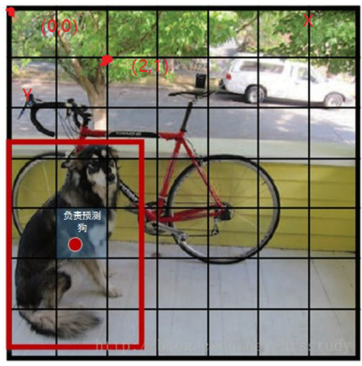
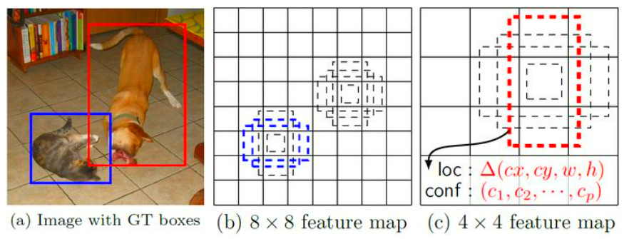

一阶段（端到端）方法
YOLO
原论文：《You Only Look Once: Unified, Real-Time Object Detection》
Yolo算法采用一个单独的CNN模型实现end-to-end的目标检测。
Yolo的CNN网络将输入的图片分割成$ S × S $个单元格，每个单元格负责去检测那些中心点落在该格子内的目标（举个例子：狗的中心落在左下角一个单元格内，那么该单元格负责预测这个狗），每个单元格会预测$B$个边界框bbox（bounding box）及该bbox的置信度（confidence）。如果一个bbox中不含目标，那么其置信度 = 0；如果包含目标，那么置信度 = bbox与实际框（GT）的IOU。
边界框的大小与位置可以用4个值来表征，加上置信度，每个边界框的预测值实际上包含$5$个元素：$(x, y, w, h, c)$。

分类：在Yolo算法中，一个单元格内的多个bbox都被预测为同一个类别（这是Yolo算法的一个缺点，因为这样很容易漏掉小目标），所以对于每一个单元格，会给出置信度最高的那个bbox的$C$个类别的概率值。
综上，每个单元格需要预测$(B 5 + C)$个值，如果有$ S × S $个单元格，那么最终预测值为$S × S×(B 5 + C)$大小的张量。
Yolo的缺点：定位不准；难以检测小目标。
SSD
相比Yolo，SSD采用CNN来直接进行检测，而不是像Yolo那样在全连接层之后做检测。
另外还有两个重要的改变，一是SSD提取了不同尺度的特征图来做检测，大尺度特征图（较靠前的特征图）可以用来检测小物体，而小尺度特征图（较靠后的特征图）用来检测大物体；二是SSD采用了不同尺度和长宽比的先验框（Prior boxes, Default boxes，在Faster R-CNN中叫做锚，Anchors）。

核心理念
（1）采用多尺度特征图用于检测
所谓多尺度，就是采用大小不同的特征图。大尺度特征图（较靠前的特征图）可以用来检测小物体，而小尺度特征图（较靠后的特征图）用来检测大物体。
（2）采用卷积进行检测
与Yolo最后采用全连接层不同，SSD直接采用卷积对不同的特征图来进行提取检测结果。对于形状为 m n p 的特征图，只需要采用 3 3 p 这样比较小的卷积核得到检测值。
（3）设置先验框
SSD借鉴了Faster R-CNN中anchor的理念，每个单元设置尺度或者长宽比不同的先验框，预测的边界框（bounding boxes）是以这些先验框为基准的，在一定程度上减少训练难度。
每个单元会设置多个先验框，其尺度和长宽比存在差异，如下图所示，可以看到每个单元使用了4个不同的先验框，图片中猫和狗分别采用最适合它们形状的先验框来进行训练。

综上所述，对于一个大小 m n 的特征图，共有 m n 个单元，每个单元设置的先验框数目记为 k ，那么每个单元共需要 (c + 4) k 个预测值，所有的单元共需要 (c + 4) k m n个预测值，由于SSD采用卷积做检测，所以就需要 (c + 4) * k 个卷积核完成这个特征图的检测过程。